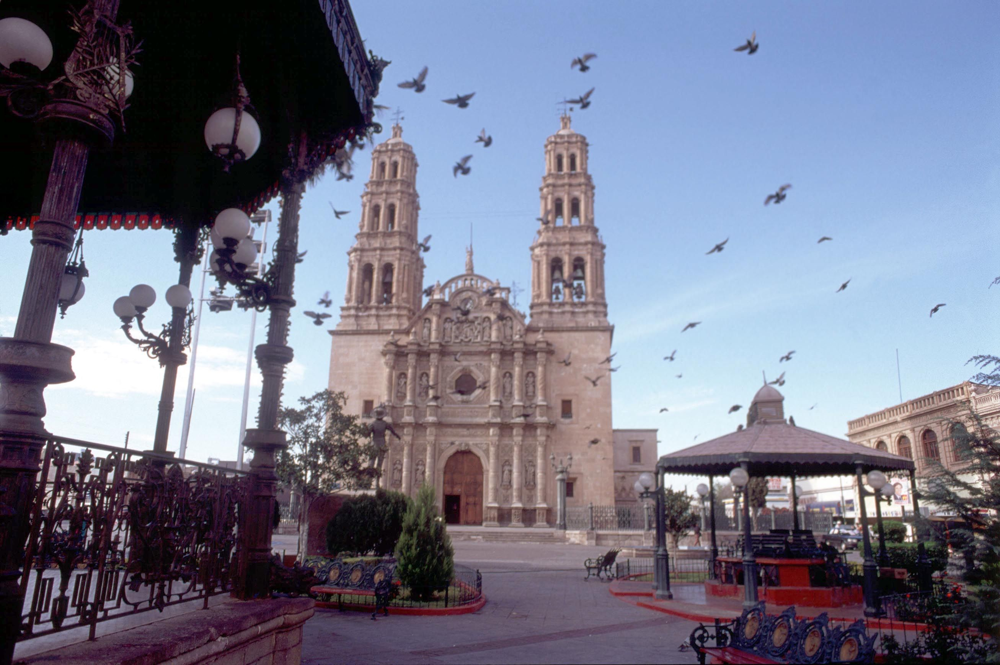

Toda acción de lucha, todo proceso revolucionario tiene un sustento, un soporte político e idiológico que le permita su posterior desarrollo. Parte de entorno real inmediato y también se nutre del contexto más amplio; tanto la necesidad económica, social, política, como de sus manifestaciones: pobreza, desigualdad, injusticia y falta de democracia y dignidad. En Chihuahua los movimientos sociales campesinos, magisteriales, estudiantes y obreros han recogido en su haber las mejores tradiciones, los principios liberales y los ideales de justicia agraria y laboral que recogen los postulados de las luchas revolucionarias en sus mejores momentos y en sus más claros y valiosos documentos.
